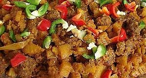

Sambal Daging Cincang

Bahan-bahan:
- 150 g daging sapi cincang
- 5 sdm minyak sayur
- 1 lembar daun salam
- 1 buah tomat mer, cincang
- 20 mata petai, kupas, iris menjadi 2
- 150 ml air
Bumbu, haluskan:
- 200 g cabai merah, buang bijinya, kukus sampai matang
- 10 butir bawang merah
- 4 siung bawang putih
- 6 butir kemir, sangrai
- 20 g gula merah, sisir
- 1 sdt garam
- 1 sdm terasi matang
Cara Membuat:
- Sangrai daging cincang sampai air daging habis dan kering
- Panaskan minyak, tumis bumbu halus dan daun salam hingga harum dan matang.
- Masukkan tomat, daging, petai, dan air.
- Masak sampai daging empuk, kuahnya mengental dan berminyak